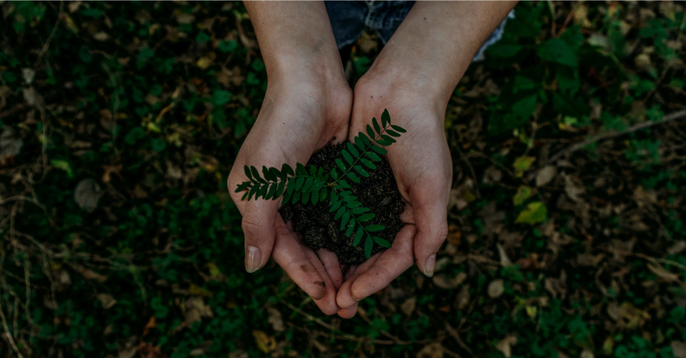
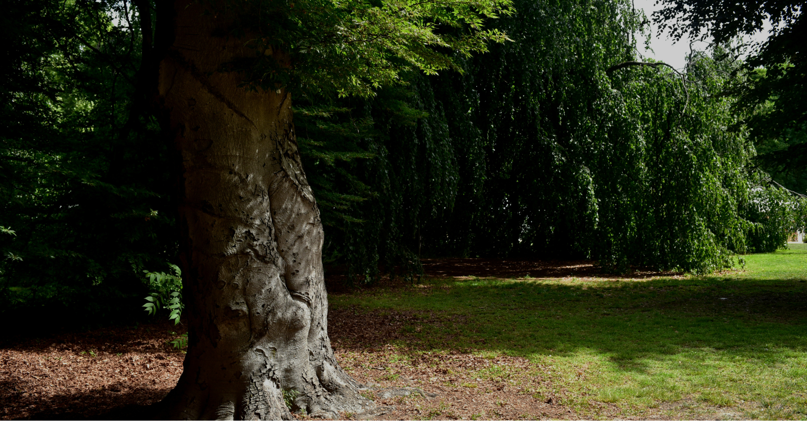
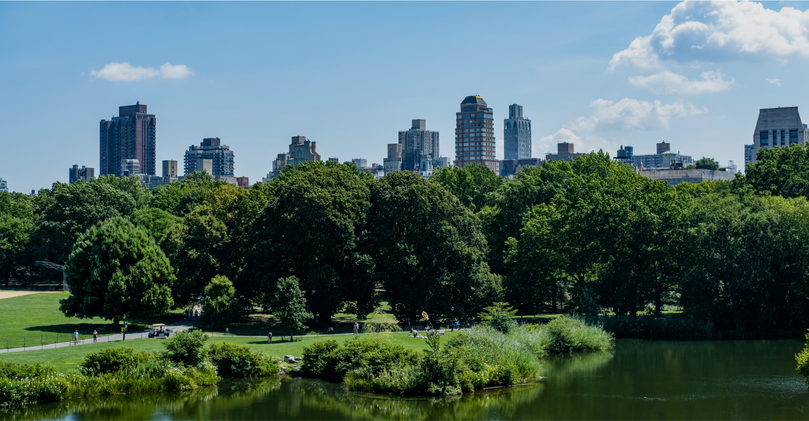

본문바로가기
주메뉴바로가기
생명의숲 forest for life
메뉴열기
소개
생명의숲은!
함께하는 이들
재정공개
공지사항
찾아오시는길
활동
소개 활동
활동소개
활동이야기
그린짐 이야기
아름다운 숲
참여와후원
소개 활동 참여와후원
후원이야기
후원안내
기업후원
참여프로그램
자원활동안내
자료실
정기간행물
문서자료실
미디어자료실
나와후원
한국어
메뉴닫기
검색
언어선택
팝업
생명의숲은 숲을 통해 사회문제를 해결하고,
거리의 숲을 만들기를 꿈꿉니다.
#모두가 누리는 #5분 거리의 숲

기념하고 싶은 날! 서울 곳곳에
나무 한그루 심어보는 건 어떠세요?
#특별한날#마이트리

생명의숲과 나무 할아버지 박상진교수의
우리가 지켜야할 고목나무이야기
#지키자#고목나무

사라져가고 있는 해안
소나무숲을 건강하게 지켜주세요.
#환경#기부
tree
introduce
story
마이트리
해피빈
같이가치
TOP
Main
나무심기
숲 활동
활동이야기